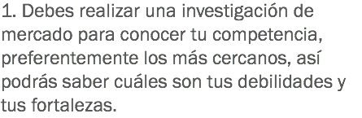
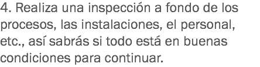
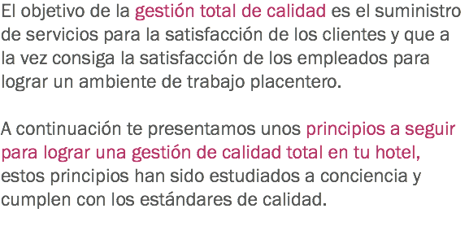
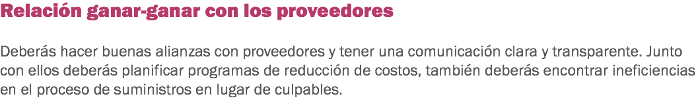

Aplicar sistemas de calidad en el servicio de hotelería

Gestión de calidad


![Una familia decide ir de vacaciones a una ciudad que no conoce y por lo tanto decide no hacer reservación en hoteles de cadena internacional si no que la hace en un lugar que se nota más cálido, reconfortante y que tiene el sello de la ciudad. Cuando llegan nadie los recibe en la puerta, se dirigen a la recepción y la persona les dice que hay un problema con la reservación, que deben esperar unos minutos, esperan en unos sillones poco cómodos. Desesperados después de 30 minutos, y varias personas que reciben sus habitaciones, van a recepción y vuelven a preguntar qué sucede con su habitación, les comentan que están limpiándolas y que en un momento les llaman para entregárselas, después de otros 10 minutos les llaman y les hacen la entrega. Cuando llegan a su habitación se dan cuenta de que es una habitación pequeña y con poca luz, la ventana da hacia un terreno baldío y el olor es un poco incómodo para respirar. En el baño no hay papel del baño ni toallas, las piden a recepción y tardan 15 minutos en llevarlas. En lugar de pasar el día en el hotel, deciden salir de paseo a la ciudad y no regresar hasta la noche solamente a dormir. Se quedan sólo 2 noches, cuando van a recepción a pedir su salida, les dan un recibo con costos altos y con gastos que no hicieron y que no se logran resolver, tiene que pagarlos para poder salir.](images/u704-16.png)

![Una familia decide ir de vacaciones a una ciudad que no conoce y por lo tanto decide no hacer reservación en hoteles de cadena internacional, sino que la hace en un lugar que se nota más cálido, reconfortante y que tiene el sello de la ciudad. Están por llegar al hotel y ven que tiene buena vista desde afuera. Cuando entran, los recibe una persona con una bebida tradicional del lugar, fresca y con gran sabor, por supuesto esta persona lleva sus maletas. Llegan a recepción y la reservación está como la hicieron en Internet sin ningún problema, al contrario al llegar al cuarto se dan cuenta que es una habitación más grande y confortable de lo que esperaban, y además tiene una canasta de regalo con dulces típicos. Todo está limpio y con buena ambientación. Están ahí por 3 noches, y cada vez que deciden hacer algo en el hotel se sorprenden que está en buenas condiciones y que cuenta con nuevas tecnologías de desarrollo. A su partida van a recepción y piden su pase de salida, reciben su recibo y es un precio justo por el lugar y todas las atenciones de sus empleados.](images/u714-4.png)
x






x





x


Haz clic en Regresar para volver al inicio.